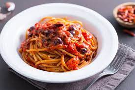

Spaghetti Alla Puttanesca

Description
Spaghetti alla Puttanesca is a traditional Italian pasta from Naples that's quick to put together from pantry staples. If you have canned tomatoes, garlic, olives, anchovies and capers in your cupboard, you can knock out this simple but flavourful sauce in a flash.
Ingredients
- Spaghetti 0.75 lb
- Peeled tomatoes 1.75 lbs
- Anchovies in oil 1 oz
- Salted capers 0.33 oz
- Parsley 1 bunch
- Gaeta olives 1/2 cup
- Garlic 3 cloves
- Dried chili pepper 2
- Extra virgin olive oil 2 1/2 tbsp
- Fine salt to taste
Preparation
To make spaghetti alla puttanesca,
- First rinse the capers under running water to remove the excess salt
- Then dry them and chop them roughly with a knife
- Take the pitted Gaeta olives and crush them by pushing down with the blade of a knife
- Wash, dry, and chop the parsley
- Bring a pot of water to a boil to cook the pasta, salting it to taste once boiling
- In the meantime, add the oil, whole peeled garlic cloves, chopped dried chili, and anchovies to a large frying pan
- Add the rinsed capers and brown over medium heat for 5 minutes, stirring often, so the anchovies dissolve and release all their aromas
- Mash the peeled tomatoes slightly and add them to the pan
- Stir with a spoon and cook for another 10 minutes over medium heat
- Cook the spaghetti until al dente
- Once the sauce has cooked, remove the garlic cloves and add the crushed olives
- Season the sauce with the chopped parsley
- When the pasta is al dente, drain it and pour directly into the pan, flipping it in the pan for 30 seconds, just enough time to allow all the flavors to meld together
Your Spaghetti alla Puttanesca is ready to serve piping hot!